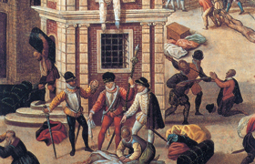

Lezione 12  Riforma e controriforma
Riforma e controriforma
<

Anglicani: appartenenti alla Chiesa anglicana, costituita dalle province ecclesiastiche di Canterbury e York, con 43 diocesi, sotto il primato d’onore dell’Arcivescovo di Canterbury. Riconosce come “supremo governatore invisibile” il re d’Inghilterra che, a sua volta, all’atto dell’incoronazione giura di mantenere e difendere la dottrina e l’organizzazione. […]
E’ la Chiesa d’Inghilterra, staccatasi dalla cattolica di Roma [sotto Enrico VIII nel 1534].
Calvinisti: seguaci di Giovanni Calvino o della sua teologia, particolarmente quanto alla dottrina della doppia predestinazione […].
Luterani: seguaci della dottrina di Martin Lutero. Il corpo delle dottrine predicate da Lutero è detto luteranesimo.
Puritani: il termine fu coniato dagli anglicani nel 1560 circa con significato di scherno, poi fu accettato dai puritani medesimi. Sono coloro che appartengono al movimento religioso del puritanesimo, fiorito in Inghilterra tra il XVI e il XVII secolo. Il puritanesimo tentò di dare alla chiesa anglicana un carattere più rigorosamente calvinistico.
Ugonotti: Nome con cui sono designati i protestanti francesi nelle lotte di religione dei secoli XVI e XVII. […] Dal 1535, dopo i primi segni di intolleranza antiprotestante della corona francese, al 1559, il protestantesimo francese si era andato avviando verso la formazione di un’organizzazione autonoma. Nel 1559 si tenne a S. Germano il primo sinodo nazionale delle chiese riformate francesi; nel 1561 si contavano 2150 comunità, tutte rappresentate al sinodo nazionale. […] Gli ugonotti formavano un corpo a sé, strettamente disciplinato e nettamente differenziato per costumi e religiosità dalla restante società francese, e insieme una vera e propria potenza politico-militare, cui la lotta contro la corona per gli antichi privilegi degli stati assicurava una notevole popolarità presso magistrati e corporazioni cittadine.
Valdese: Denominazione di un movimento religioso che trae origine dalla predicazione di un mercante lionese, Valdo, e di quanto è connesso con tale movimento, nonché dei suoi seguaci. […] Solo con l’adesione alla Riforma il movimento valdese acquistò una vera e propria autonomia di fronte alla Chiesa romana. I primi contatti dei valdesi con la Riforma risalgono al 1526, ma l’adesione formale ad essa fu decisa nel sinodo di Chanforan presso Angrogna (12 settembre 1532). […] Venne accettata una formula di fede che implicava l’adesione dei valdesi alle idee dei riformatori svizzeri [calvinisti].
Fonte: Dizionario enciclopedico italiano, Istituto dell’Enciclopedia Italiana fondata da Giovanni Treccani, Roma, 1958